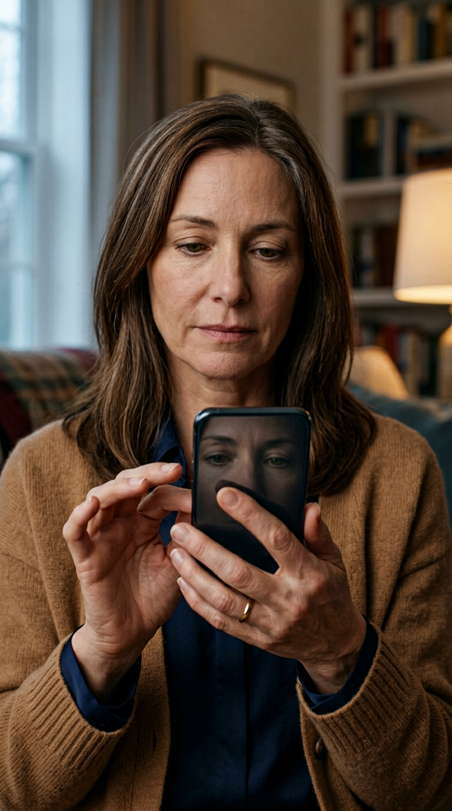
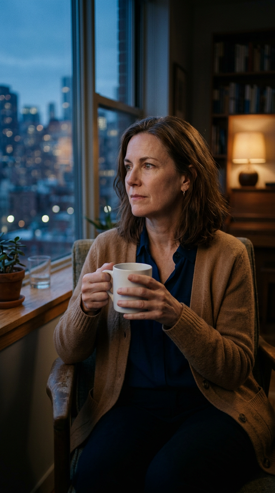
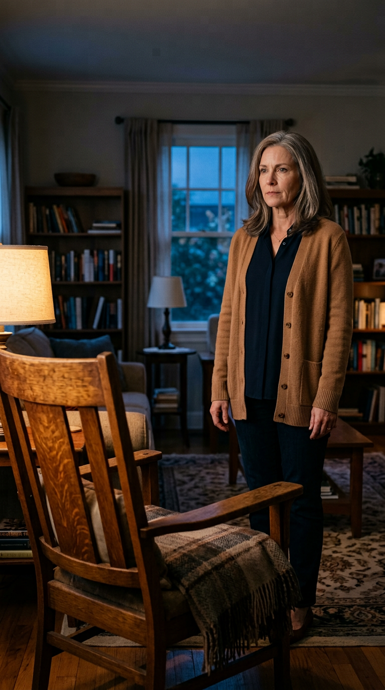
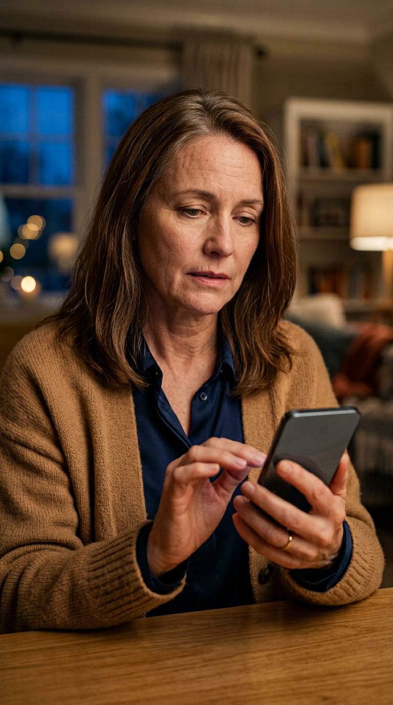
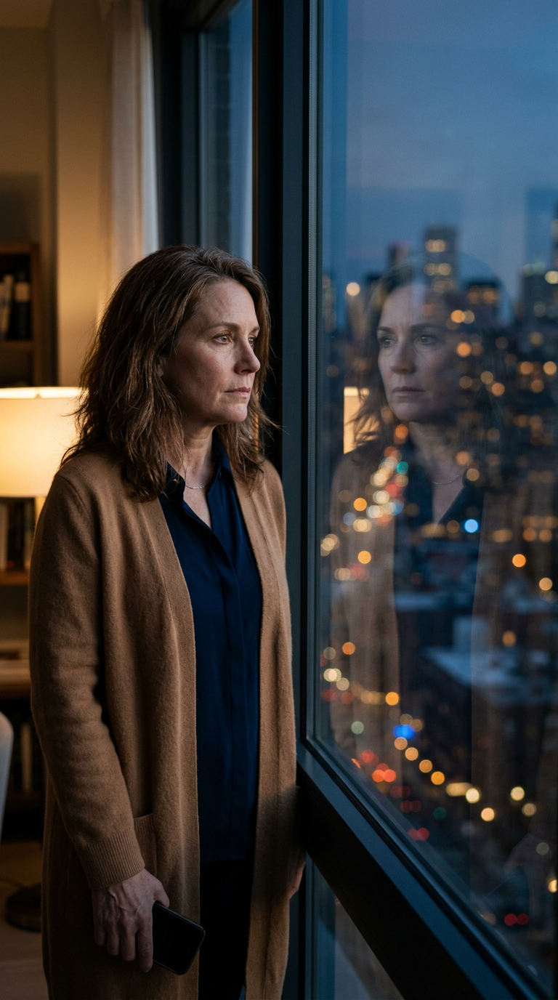
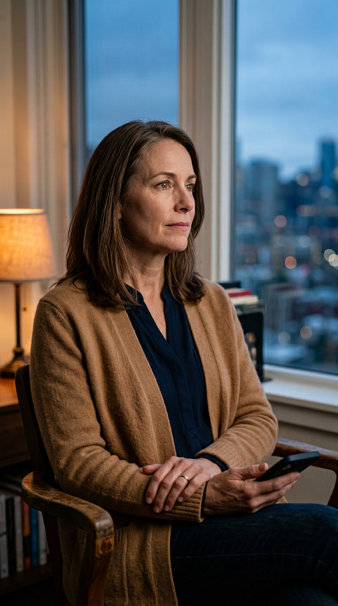
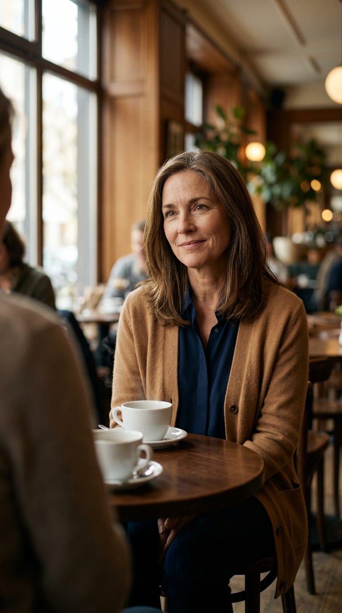

7 صور فريدة + 3 إعادات استخدام = 10 مشاهد | 9:16 عمودي |MS-04 Warm Bittersweet | شخصية متطابقة في كل المشاهد

لقطة حميمة 85mm: اليدان تحملان الهاتف، الإبهام متردد مليمترات فوق الشاشة، انعكاس عينيها الباهت في الزجاج. إضاءة غسق باردة + مصباح دافئ.

50mm متوسط مقرب: جالسة بجانب نافذة شقة عند الغسق، تمسك كوب سيراميك بكلتا يديها، تنظر لأضواء المدينة البعيدة. تعبير حكيم ومحفوظ.

35mm بيئي: كرسي خشبي فارغ في المقدمة مضاء بلطف، المرأة في الوسط هادئة ومحفوظة. يوحي بالغياب دون حزن مبالغ.

50mm مقرب: بعد استلام الرسالة، الإبهام يحوّم فوق الرد دون نقر. تعبير من تركيز محايد إلى عدم يقين حذر. الشاشة فارغة لإضافة النص في VN.

50mm بورتريه: تقف قرب نافذة كبيرة عند الغسق، الهاتف مرتخٍ في يد واحدة، تنظر لانعكاسها المطابق مادياً في الزجاج + بوكيه أضواء المدينة.

65mm بورتريه مقرب: جالسة بجانب النافذة، الهاتف في حضنها، الكتفان يسترخيان قليلاً، تعبير إدراك مدروس وهادئ — السؤال المحوري للقصة.

50mm متوسط: طاولة خشبية صغيرة، كوبان أبيضان، المرأة بابتسامة نصفية حذرة ومتفائلة. الشخص المقابل كتف/ذراع ضبابي فقط — لا وجه محدد.
00:00 Scene 01 VISUAL HOOK → 00:00.5 Scene 02 VERBAL HOOK → 00:04 Scene 03 CONTEXT BRIDGE → 00:08 Scene 04 CORE-A → 00:18 Scene 05 CORE-B → 00:28 Scene 06 CORE-C → 00:36 Scene 07 PAYOFF → 00:44 Scene 08 LIKE+SHARE (إعادة استخدام 07) → 00:47 Scene 09 CTA (إعادة استخدام 07) → 00:54 Scene 10 LOOP (إعادة استخدام 01) → حلقة سلسة إلى البداية.
جميع الصور بدون نص مولّد — جميع النصوص تُضاف في VN Video Editor بخط Lemonada. الهوية البصرية MS-04 Warm Bittersweet مع لون تمييز #E8A020.